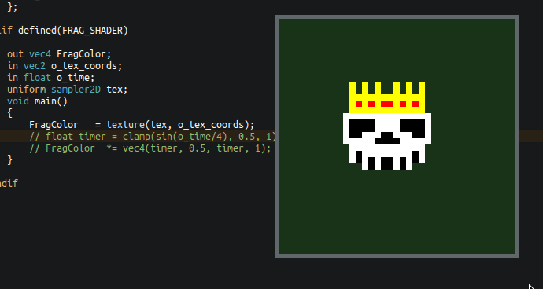

#include "shader.glsl"
How to leverage the C preprocessor to write reusable, hot-reloadable shader code

OpenGL tutorials usually skip over any file I/O code by telling you to write out your very first shader as a string literal like this:
const char* vertex_shader_source = "#version 330 core\n" "layout(location = 0) in vec3 aPos;\n" "void main() {\n" " gl_Position = vec4(aPos, 1.0);\n" "}\0"; // ...or using raw string literals (>C++11): const char* fragment_shader_source = R"(#version 330 core layout(location = 0) in vec3 aPos; /* ... */)";
This becomes impractical for more complex shaders, since it's tedious to write and we lose any syntax highlighting. Here is an alternative approach that still avoids file I/O and has some additional advantages.
Table of Contents
1. Pros & Cons
- ✅ Shader code embedded as a C string (no file I/O necessary)
- ✅ No additional preprocessing step & portable across C/C++
- ✅ Option of having shader code in a separate file or defined inline
- ✅ Preserves (most) syntax highlighting in both cases
- ✅ Share
#define's between C and GLSL code - ✅ Centralize common helper functions between shaders (e.g. in
common.glsl) - ✅ Centralize common struct definitions between GLSL and C (e.g. in
common.h) - ✅ Conditional compilation (e.g. having fragment & vertex shader in one file)
- ✅ Can pair well with hot-reloading C code
- ❌ Newlines are lost, so debug info containing line numbers can be imprecise
- ❌ The
glslfiles become more noisy - ❌ Somewhat ugly use of
#includein the C code
2. Approach
We make use a STRINGIFY macro:
#define SHADER_VERSION_STRING "#version 330 core\n" #define _STRINGIFY(...) #__VA_ARGS__ #define S(...) _STRINGIFY(__VA_ARGS__)
Now we can write out shader code inline without quotes or newlines. The C syntax highlighter should also do a decent job of highlighting the GLSL code:
// option 1: shader src code as an inlined string const char* inline_shader = SHADER_VERSION_STRING S( layout(location = 0) in vec3 aPos; void main() { gl_Position = vec4(aPos, 1); } );
To have external .glsl files, we write out the shader code and wrap it inside
the stringify macro. In C/C++ we then #include that1:
/* shader.glsl */ SHADER_VERSION_STRING S( layout(location = 0) in vec3 aPos; void main() { gl_Position = vec4(aPos, 1); } )
// option 2: shader src code as an included file const char* shader_src = #include "shader.glsl" ;
3. Conditional Compilation
To have both the fragment and vertex shader in the same .glsl file, we can
invoke the C preprocessor:
SHADER_VERSION_STRING #if defined(VERT_SHADER) S( // vertex shader code ) #elif defined(FRAG_SHADER) S( // fragment shader code ) #endif #undef VERT_SHADER #undef FRAG_SHADER
To include the shaders in C:
const char* vertex_shader_src = #define VERT_SHADER #include "shader.glsl" ; const char* fragment_shader_src = #define FRAG_SHADER #include "shader.glsl" ;
We can also use this approach to have variations of the same shader where we enable/disable certain parts of the code2:
SHADER_VERSION_STRING S( uniform float time; out vec4 FragColor; void main() { vec3 color = vec3(0,0,0); #if (SHADER_FEATURE & SHADER_RED_PULSE) color.r = sin(time)*0.5+0.5; #endif #if (SHADER_FEATURE & SHADER_GREEN_PULSE) color.g = cos(time)*0.5+0.5; #endif FragColor = vec4(color, 1.0); } ) #undef SHADER_FEATURE
/* shader features (can't be an enum) */ #define SHADER_NONE ( 0) #define SHADER_RED_PULSE (1 << 0) #define SHADER_GREEN_PULSE (1 << 1) const char* shader_a = #define SHADER_FEATURE (SHADER_RED_PULSE) #include "shader.glsl" ; const char* shader_b = #define SHADER_FEATURE (SHADER_RED_PULSE | SHADER_GREEN_PULSE) #include "shader.glsl" ;
We can still invoke the GLSL preprocessor by wrapping a directive in \n:
SHADER_VERSION_STRING S( \n#pragma optimize(on)\n // enable optimizations void main() { /* ... */ } )
6. Hot-Reloading Embedded Shaders
Usually, you wouldn't be able to hot-reload shaders that are included in your source code. After all, they are now baked into the executable. But what if we reload the entirety of our code using DLL-based 4 hot reloading? This way, we get a buffer to the string of a new shader anytime we recompile.
Instead of having code that checks several shader files for modifications times
or setting up file watchers, we only check the .dll or .so for changes. All we
then need to do is to recompile and link the shader program again after we have
loaded in the new DLL:
void* dll_handle = dlopen("code.dll", RTLD_NOW); if (dll_handle == NULL) { printf("Opening DLL failed. Trying again...\n"); } while (dll_handle == NULL) { dll_handle = dlopen(DLL_FILENAME, RTLD_NOW); } // fill function pointers create_shaders = (void (*)(state_t*)) dlsym(dll_handle, "create_shaders"); // reload all shaders create_shaders(&state);

Figure 1: Reloading a shader under filewatch using code hot-reloading
If you don't want to compile all shaders again and instead only the ones that have changed, you could either check the embedded source code strings for changes or check for new file modification timestamps and only reload the corresponding shaders. But at that point, you would probably be better off implementing a conventional shader management system that loads in shaders as real text files.
Footnotes
If you prefer not to have a dangling semicolon, you can instead write it out at the end of the shader file. However, using the version without the semicolon at the end lets us use initializers:
typedef struct shader_t { const char* name; // shader name const char* code; // shader source code as a string } shader_t; shader_t shader = { "Shader Name", #include "shader.vert" };
This does not compile with MSVC, since it seems
that only GCC and Clang allow directives within macro invocations. It can work
with cl.exe if every directive appears outside an S(...) like before, however.
Keep in mind that the layout of both structs need to match. This means
the C code needs to comply with the shader's memory layout qualifiers (usually
std430). We can do this by specifying padding bytes manually (always aligned to
the size of a vec4), or by making use of _Pragma("pack(push,n)") and
_Pragma("pack(pop)") when expanding the macro on the C-side. YMMV.
Comments